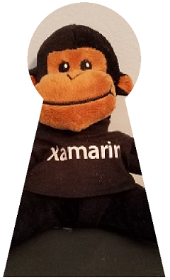

Clipping with Paths and Regions
Use paths to clip graphics to specific areas, and to create regions
It's sometimes necessary to restrict the rendering of graphics to a particular area. This is known as clipping. You can use clipping for special effects, such as this image of a monkey seen through a keyhole:

The clipping area is the area of the screen in which graphics are rendered. Anything that is displayed outside of the clipping area is not rendered. The clipping area is usually defined by a rectangle or an SKPath object, but you can alternatively define a clipping area using an SKRegion object. These two types of objects at first seem related because you can create a region from a path. However, you cannot create a path from a region, and they are very different internally: A path comprises a series of lines and curves, while a region is defined by a series of horizontal scan lines.
The image above was created by the Monkey through Keyhole page. The MonkeyThroughKeyholePage class defines a path using SVG data and loads a bitmap from the app's Resources/Raw folder using .NET MAUI's FileSystem API:
public class MonkeyThroughKeyholePage : ContentPage
{
SKBitmap? bitmap;
SKPath keyholePath = SKPath.ParseSvgPathData(
"M 300 130 L 250 350 L 450 350 L 400 130 A 70 70 0 1 0 300 130 Z");
public MonkeyThroughKeyholePage()
{
Title = "Monkey through Keyhole";
SKCanvasView canvasView = new SKCanvasView();
canvasView.PaintSurface += OnCanvasViewPaintSurface;
Content = canvasView;
_ = LoadBitmapAsync();
}
async Task LoadBitmapAsync()
{
using Stream stream = await FileSystem.OpenAppPackageFileAsync("SeatedMonkey.jpg");
bitmap = SKBitmap.Decode(stream);
}
...
}
Although the keyholePath object describes the outline of a keyhole, the coordinates are completely arbitrary and reflect what was convenient when the path data was devised. For this reason, the PaintSurface handler obtains the bounds of this path and calls Translate and Scale to move the path to the center of the screen and to make it nearly as tall as the screen:
public class MonkeyThroughKeyholePage : ContentPage
{
...
void OnCanvasViewPaintSurface(object? sender, SKPaintSurfaceEventArgs args)
{
SKImageInfo info = args.Info;
SKSurface surface = args.Surface;
SKCanvas canvas = surface.Canvas;
canvas.Clear();
// Set transform to center and enlarge clip path to window height
SKRect bounds;
keyholePath.GetTightBounds(out bounds);
canvas.Translate(info.Width / 2, info.Height / 2);
canvas.Scale(0.98f * info.Height / bounds.Height);
canvas.Translate(-bounds.MidX, -bounds.MidY);
// Set the clip path
canvas.ClipPath(keyholePath);
// Reset transforms
canvas.ResetMatrix();
// Display monkey to fill height of window but maintain aspect ratio
canvas.DrawBitmap(bitmap,
new SKRect((info.Width - info.Height) / 2, 0,
(info.Width + info.Height) / 2, info.Height));
}
}
But the path is not rendered. Instead, following the transforms, the path is used to set a clipping area with this statement:
canvas.ClipPath(keyholePath);
The PaintSurface handler then resets the transforms with a call to ResetMatrix and draws the bitmap to extend to the full height of the screen. This code assumes that the bitmap is square, which this particular bitmap is. The bitmap is rendered only within the area defined by the clipping path:

The clipping path is subject to the transforms in effect when the ClipPath method is called, and not to the transforms in effect when a graphical object (such as a bitmap) is displayed. The clipping path is part of the canvas state that is saved with the Save method and restored with the Restore method.
Combining Clipping Paths
Strictly speaking, the clipping area is not "set" by the ClipPath method. Instead, it is combined with the existing clipping path, which begins as a rectangle equal in size to the canvas. You can obtain the rectangular bounds of the clipping area using the LocalClipBounds property or the DeviceClipBounds property. The LocalClipBounds property returns an SKRect value that reflects any transforms that might be in effect. The DeviceClipBounds property returns a RectI value. This is a rectangle with integer dimensions, and describes the clipping area in actual pixel dimensions.
Any call to ClipPath reduces the clipping area by combining the clipping area with a new area. The full syntax of the ClipPath method that combines the clipping area with a rectangle:
public Void ClipRect(SKRect rect, SKClipOperation operation = SKClipOperation.Intersect, Boolean antialias = false);
By default, the resultant clipping area is an intersection of the existing clipping area and the SKPath or SKRect that is specified in the ClipPath or ClipRect method. This is demonstrated in the Four Circles Intersect Clip page. The PaintSurface handler in the FourCircleInteresectClipPage class reuses the same SKPath object to create four overlapping circles, each of which reduces the clipping area through successive calls to ClipPath:
void OnCanvasViewPaintSurface(object? sender, SKPaintSurfaceEventArgs args)
{
SKImageInfo info = args.Info;
SKSurface surface = args.Surface;
SKCanvas canvas = surface.Canvas;
canvas.Clear();
float size = Math.Min(info.Width, info.Height);
float radius = 0.4f * size;
float offset = size / 2 - radius;
// Translate to center
canvas.Translate(info.Width / 2, info.Height / 2);
using (SKPath path = new SKPath())
{
path.AddCircle(-offset, -offset, radius);
canvas.ClipPath(path, SKClipOperation.Intersect);
path.Reset();
path.AddCircle(-offset, offset, radius);
canvas.ClipPath(path, SKClipOperation.Intersect);
path.Reset();
path.AddCircle(offset, -offset, radius);
canvas.ClipPath(path, SKClipOperation.Intersect);
path.Reset();
path.AddCircle(offset, offset, radius);
canvas.ClipPath(path, SKClipOperation.Intersect);
using (SKPaint paint = new SKPaint())
{
paint.Style = SKPaintStyle.Fill;
paint.Color = SKColors.Blue;
canvas.DrawPaint(paint);
}
}
}
What's left is the intersection of these four circles:
{kind=link}
The SKClipOperation enumeration has only two members:
Differenceremoves the specified path or rectangle from the existing clipping areaIntersectintersects the specified path or rectangle with the existing clipping area
If you replace the four SKClipOperation.Intersect arguments in the FourCircleIntersectClipPage class with SKClipOperation.Difference, you'll see the following:
{kind=link}
Four overlapping circles have been removed from the clipping area.
The Clip Operations page illustrates the difference between these two operations with just a pair of circles. The first circle on the left is added to the clipping area with the default clip operation of Intersect, while the second circle on the right is added to the clipping area with the clip operation indicated by the text label:

The ClipOperationsPage class defines two SKPaint objects as fields, and then divides the screen up into two rectangular areas. These areas are different depending on whether the phone is in portrait or landscape mode. The DisplayClipOp class then displays the text and calls ClipPath with the two circle paths to illustrate each clip operation:
void OnCanvasViewPaintSurface(object? sender, SKPaintSurfaceEventArgs args)
{
SKImageInfo info = args.Info;
SKSurface surface = args.Surface;
SKCanvas canvas = surface.Canvas;
canvas.Clear();
float x = 0;
float y = 0;
foreach (SKClipOperation clipOp in Enum.GetValues(typeof(SKClipOperation)))
{
// Portrait mode
if (info.Height > info.Width)
{
DisplayClipOp(canvas, new SKRect(x, y, x + info.Width, y + info.Height / 2), clipOp);
y += info.Height / 2;
}
// Landscape mode
else
{
DisplayClipOp(canvas, new SKRect(x, y, x + info.Width / 2, y + info.Height), clipOp);
x += info.Width / 2;
}
}
}
void DisplayClipOp(SKCanvas canvas, SKRect rect, SKClipOperation clipOp)
{
float textSize = font.Size;
canvas.DrawText(clipOp.ToString(), rect.MidX, rect.Top + textSize, SKTextAlign.Center, font, textPaint);
rect.Top += textSize;
float radius = 0.9f * Math.Min(rect.Width / 3, rect.Height / 2);
float xCenter = rect.MidX;
float yCenter = rect.MidY;
canvas.Save();
using (SKPath path1 = new SKPath())
{
path1.AddCircle(xCenter - radius / 2, yCenter, radius);
canvas.ClipPath(path1);
using (SKPath path2 = new SKPath())
{
path2.AddCircle(xCenter + radius / 2, yCenter, radius);
canvas.ClipPath(path2, clipOp);
canvas.DrawPaint(fillPaint);
}
}
canvas.Restore();
}
Calling DrawPaint normally causes the entire canvas to be filled with that SKPaint object, but in this case, the method just paints within the clipping area.
Exploring Regions
You can also define a clipping area in terms of an SKRegion object.
A newly created SKRegion object describes an empty area. Usually the first call on the object is SetRect so that the region describes a rectangular area. The parameter to SetRect is an SKRectI value — a rectangle with integer coordinates because it specifies the rectangle in terms of pixels. You can then call SetPath with an SKPath object. This creates a region that is the same as the interior of the path, but clipped to the initial rectangular region.
The region can also be modified by calling one of the Op method overloads, such as this one:
public Boolean Op(SKRegion region, SKRegionOperation op)
The SKRegionOperation enumeration is similar to SKClipOperation but it has more members:
DifferenceIntersectUnionXORReverseDifferenceReplace
The region that you're making the Op call on is combined with the region specified as a parameter based on the SKRegionOperation member. When you finally get a region suitable for clipping, you can set that as the clipping area of the canvas using the ClipRegion method of SKCanvas:
public void ClipRegion(SKRegion region, SKClipOperation operation = SKClipOperation.Intersect)
The following screenshot shows clipping areas based on the six region operations. The left circle is the region that the Op method is called on, and the right circle is the region passed to the Op method:

Are these all the possibilities of combining these two circles? Consider the resultant image as a combination of three components, which by themselves are seen in the Difference, Intersect, and ReverseDifference operations. The total number of combinations is two to the third power, or eight. The two that are missing are the original region (which results from not calling Op at all) and an entirely empty region.
It's harder to use regions for clipping because you need to first create a path, and then a region from that path, and then combine multiple regions. The overall structure of the Region Operations page is very similar to Clip Operations but the RegionOperationsPage class divides the screen up into six areas and shows the extra work required to use regions for this job:
void OnCanvasViewPaintSurface(object? sender, SKPaintSurfaceEventArgs args)
{
SKImageInfo info = args.Info;
SKSurface surface = args.Surface;
SKCanvas canvas = surface.Canvas;
canvas.Clear();
float x = 0;
float y = 0;
float width = info.Height > info.Width ? info.Width / 2 : info.Width / 3;
float height = info.Height > info.Width ? info.Height / 3 : info.Height / 2;
foreach (SKRegionOperation regionOp in Enum.GetValues(typeof(SKRegionOperation)))
{
DisplayClipOp(canvas, new SKRect(x, y, x + width, y + height), regionOp);
if ((x += width) >= info.Width)
{
x = 0;
y += height;
}
}
}
void DisplayClipOp(SKCanvas canvas, SKRect rect, SKRegionOperation regionOp)
{
float textSize = font.Size;
canvas.DrawText(regionOp.ToString(), rect.MidX, rect.Top + textSize, SKTextAlign.Center, font, textPaint);
rect.Top += textSize;
float radius = 0.9f * Math.Min(rect.Width / 3, rect.Height / 2);
float xCenter = rect.MidX;
float yCenter = rect.MidY;
SKRectI recti = new SKRectI((int)rect.Left, (int)rect.Top,
(int)rect.Right, (int)rect.Bottom);
using (SKRegion wholeRectRegion = new SKRegion())
{
wholeRectRegion.SetRect(recti);
using (SKRegion region1 = new SKRegion(wholeRectRegion))
using (SKRegion region2 = new SKRegion(wholeRectRegion))
{
using (SKPath path1 = new SKPath())
{
path1.AddCircle(xCenter - radius / 2, yCenter, radius);
region1.SetPath(path1);
}
using (SKPath path2 = new SKPath())
{
path2.AddCircle(xCenter + radius / 2, yCenter, radius);
region2.SetPath(path2);
}
region1.Op(region2, regionOp);
canvas.Save();
canvas.ClipRegion(region1);
canvas.DrawPaint(fillPaint);
canvas.Restore();
}
}
}
Here's a big difference between the ClipPath method and the ClipRegion method:
Important
Unlike the ClipPath method, the ClipRegion method is not affected by transforms.
To understand the rationale for this difference, it's helpful to understand what a region is. If you've thought about how the clip operations or region operations might be implemented internally, it probably seems very complicated. Several potentially very complex paths are being combined, and the outline of the resultant path is likely an algorithmic nightmare.
This job is simplified considerably if each path is reduced to a series of horizontal scan lines, such as those in old-fashioned vacuum tube TVs. Each scan line is simply a horizontal line with a start point and an end point. For example, a circle with a radius of 10 pixels can be decomposed into 20 horizontal scan lines, each of which starts at the left part of the circle and ends at the right part. Combining two circles with any region operation becomes very simple because it's simply a matter of examining the start and end coordinates of each pair of corresponding scan lines.
This is what a region is: A series of horizontal scan lines that define an area.
However, when an area is reduced to a series of scan lines, these scan lines are based on a particular pixel dimension. Strictly speaking, the region is not a vector graphics object. It is closer in nature to a compressed monochrome bitmap than to a path. Consequently, regions cannot be scaled or rotated without losing fidelity, and for this reason they are not transformed when used for clipping areas.
However, you can apply transforms to regions for painting purposes. The Region Paint program vividly demonstrates the inner nature of regions. The RegionPaintPage class creates an SKRegion object based on an SKPath of a 10-unit radius circle. A transform then expands that circle to fill the page:
void OnCanvasViewPaintSurface(object? sender, SKPaintSurfaceEventArgs args)
{
SKImageInfo info = args.Info;
SKSurface surface = args.Surface;
SKCanvas canvas = surface.Canvas;
canvas.Clear();
int radius = 10;
// Create circular path
using (SKPath circlePath = new SKPath())
{
circlePath.AddCircle(0, 0, radius);
// Create circular region
using (SKRegion circleRegion = new SKRegion())
{
circleRegion.SetRect(new SKRectI(-radius, -radius, radius, radius));
circleRegion.SetPath(circlePath);
// Set transform to move it to center and scale up
canvas.Translate(info.Width / 2, info.Height / 2);
canvas.Scale(Math.Min(info.Width / 2, info.Height / 2) / radius);
// Fill region
using (SKPaint fillPaint = new SKPaint())
{
fillPaint.Style = SKPaintStyle.Fill;
fillPaint.Color = SKColors.Orange;
canvas.DrawRegion(circleRegion, fillPaint);
}
// Stroke path for comparison
using (SKPaint strokePaint = new SKPaint())
{
strokePaint.Style = SKPaintStyle.Stroke;
strokePaint.Color = SKColors.Blue;
strokePaint.StrokeWidth = 0.1f;
canvas.DrawPath(circlePath, strokePaint);
}
}
}
}
The DrawRegion call fills the region in orange, while the DrawPath call strokes the original path in blue for comparison:

The region is clearly a series of discrete coordinates.
If you don't need to use transforms in connection with your clipping areas, you can use regions for clipping, as the Four-Leaf Clover page demonstrates. The FourLeafCloverPage class constructs a composite region from four circular regions, sets that composite region as the clipping area, and then draws a series of 360 straight lines emanating from the center of the page:
void OnCanvasViewPaintSurface(object? sender, SKPaintSurfaceEventArgs args)
{
SKImageInfo info = args.Info;
SKSurface surface = args.Surface;
SKCanvas canvas = surface.Canvas;
canvas.Clear();
float xCenter = info.Width / 2;
float yCenter = info.Height / 2;
float radius = 0.24f * Math.Min(info.Width, info.Height);
using (SKRegion wholeScreenRegion = new SKRegion())
{
wholeScreenRegion.SetRect(new SKRectI(0, 0, info.Width, info.Height));
using (SKRegion leftRegion = new SKRegion(wholeScreenRegion))
using (SKRegion rightRegion = new SKRegion(wholeScreenRegion))
using (SKRegion topRegion = new SKRegion(wholeScreenRegion))
using (SKRegion bottomRegion = new SKRegion(wholeScreenRegion))
{
using (SKPath circlePath = new SKPath())
{
// Make basic circle path
circlePath.AddCircle(xCenter, yCenter, radius);
// Left leaf
circlePath.Transform(SKMatrix.CreateTranslation(-radius, 0));
leftRegion.SetPath(circlePath);
// Right leaf
circlePath.Transform(SKMatrix.CreateTranslation(2 * radius, 0));
rightRegion.SetPath(circlePath);
// Make union of right with left
leftRegion.Op(rightRegion, SKRegionOperation.Union);
// Top leaf
circlePath.Transform(SKMatrix.CreateTranslation(-radius, -radius));
topRegion.SetPath(circlePath);
// Combine with bottom leaf
circlePath.Transform(SKMatrix.CreateTranslation(0, 2 * radius));
bottomRegion.SetPath(circlePath);
// Make union of top with bottom
bottomRegion.Op(topRegion, SKRegionOperation.Union);
// Exclusive-OR left and right with top and bottom
leftRegion.Op(bottomRegion, SKRegionOperation.XOR);
// Set that as clip region
canvas.ClipRegion(leftRegion);
// Set transform for drawing lines from center
canvas.Translate(xCenter, yCenter);
// Draw 360 lines
for (double angle = 0; angle < 360; angle++)
{
float x = 2 * radius * (float)Math.Cos(Math.PI * angle / 180);
float y = 2 * radius * (float)Math.Sin(Math.PI * angle / 180);
using (SKPaint strokePaint = new SKPaint())
{
strokePaint.Color = SKColors.Green;
strokePaint.StrokeWidth = 2;
canvas.DrawLine(0, 0, x, y, strokePaint);
}
}
}
}
}
}
It doesn't really look like a four-leaf clover, but it's an image that might otherwise be hard to render without clipping:
{kind=link}